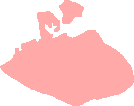
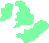
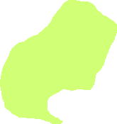
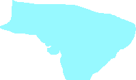
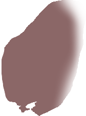

Anatolian, the language of ancient Anatolia (modern day Turkey), is a language which all modern Indo-European languages can be traced back to. The language had only two tenses (present-future and preterite), and used the subject-object-verb word order.
Indo-Iranian branched off from Anatolian, and was the predecessor of Kurdish, Persian, Urdu, Sanskrit and Hindi

Balto-Slavic was a language that branched off from Anatolian at around 5000 BCE, and is the origin of all baltic and slavic languages (including Russian, Lithuanian, Polish, etc.)
Hittite was a language of ancient Anatolia, and is the best known anatolian language.
Albanian is a lanugage with about 6 million native speakers today. It was spoken in Greece from (roughly) 3000 BCE to 2500 BCE.
Armenian is an Indo-European language belonging to its own branch, which split off of Anatolian. It has about 6 million native speakers.
Greek is the oldest language on this map which is still spoken today. It has about 13 million native speakers.

Germanic was the predecessor of German. Despite it appearing to branch off from Balto-Slavic, it is not a Slavic language.
Luvian and Lycian were Anatolian languages, which were also spoken in what is now Turkey.
Old Persian was a descendant of Indo-Iranian, and predecessor of Persian. Old Persian spread a great distance to the East.
Vedic Sanskrit was a descendant of Indo-Iranian, and predecessor of Sanskrit.

Celtic is a language which branched from Anatolian, and the predecessor of Irish and Scottish.
Italic was the predecessor of all Romance languages, including Latin, the official lanuguage of Ancient Rome.

Slavic split off from Balto-Slavic at about 1000 BCE, and is the parent language of Russian, Czech, Polish, Ukraian, and many other languages.
Baltic split off from Balto-Slavic at about 1000 BCE, and is the parent language of Lithuanian.

Kurdish is an Indo-Iranian language. It is not an official language in any country, but has about 25 million native speakers across various countries.
Sanskrit is a descendant of Vedic Sanskrit. It is still spoken in some parts of India today, but very little. It is offered as an optional language in many Indian schools.
Slovenian and Serbo-Croatian are slavic languages still spoken today in Slovenia and Croatia respectively.
Scottish, specifically Scottish Gaelic, is a successor of Celtic spoken in Scotland. The lanugage is considered at risk of dying out, with only 1.5 million speakers in Scotland (as of 2011). The primary language spoken in Scotland is English.
Irish is a successor of Celtic spoken in Ireland. Only about 1.7% of the population in Ireland speak the lanugage, however, with the country's primary language being English.
Turkish is the official language of Turkey, with approximately 88 million native speakers.
Persian is a language descended from Old Persian. It is spoken today in Iran, Iraq, Russia, Tajikistan, Uzbekistan, Azerbaijan and Afghanistan. It has an estimated 110 million speakers.
German is the successor of Germanic. It is an official language in 6 countries: Germany, Austria, Belgium, Liechtenstein, Luxembourg and Switzerland. It has an estimated 95 million speakers.
Dutch is a language descended from Germanic, with approximately 23 million native speakers. It is the official language of the Netherlands.

Hindi is an Indo-Iranian language mainly derived from Sanskrit, and is spoken in India. It has about 342 million native speakers, which is the 4th most in the world.
English is a descendant of Germanic. It is estimated that about a third of the world's population can speak the language, and it is an official language in 67 countries. There are about 400 million native English speakers across the globe.
Italian is a Romance language and descendant of Italic. It is the official language of Italy, and has about 64 million native speakers.
French is a romance language and descendant of Italic. It is the official language of France, and has about 80 million native speakers.
Swedish is a Germanic language. It is the official lanugage of Sweden, and has about 9 million native speakers.
Armenian is an Indo-European language belonging to its own branch, which split off of Anatolian. It has about 6 million native speakers.
Lithuanian is a language which originated from Baltic. It is the official language of Lithuania, and has approximately 3 million native speakers.

Russian originated from Slavic. It is the most widely spoken Slavic language, with approximately 170 million native speakers.
Portuguese is a Romance language which originated from Italic. It has roughly 220 million native speakers around the globe (mainly in Brazil). About 11 million of these native speakers live in Portugal.
Spanish is a Romance language which split off from Italic. It has roughly 470 million native speakers around the globe, making it the language with the second most native speakers in the world. Out of these speakers, about 40 million live in Spain.
Catalan is a Romance language which originated from Italic. It has roughly 5 million speakers.
Ukranian is a language which split off from slavic, and has about 40 million native speakers.
Norwegian is a language which split off from Germanic. It is mainly spoken in Norway, and has approximately 5 million native speakers.
Urdu is an Indo-Iranian language mainly derived from Persian. It has a total of about 86 million speakers.
Romanian, the official language of Romania, is a romance lanuguage and descendant of Italic. It has approximately 24 million native speakers.
Polish is a Slavic language. It has about 45 million native speakers, and is the official language of Poland.
Belarusian is a Slavic language. It is an official language in both Belarus and Poland, and has about 5 million native speakers.
Bulgarian is a Slavic language. It is the official language of Bulgaria, and has about 9 million native speakers.
Czech is a Slavic language. It is the official language of the Czech Republic, and has approximately 11 million speakers.